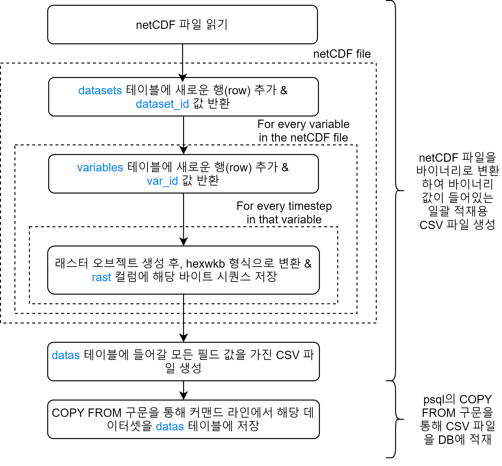
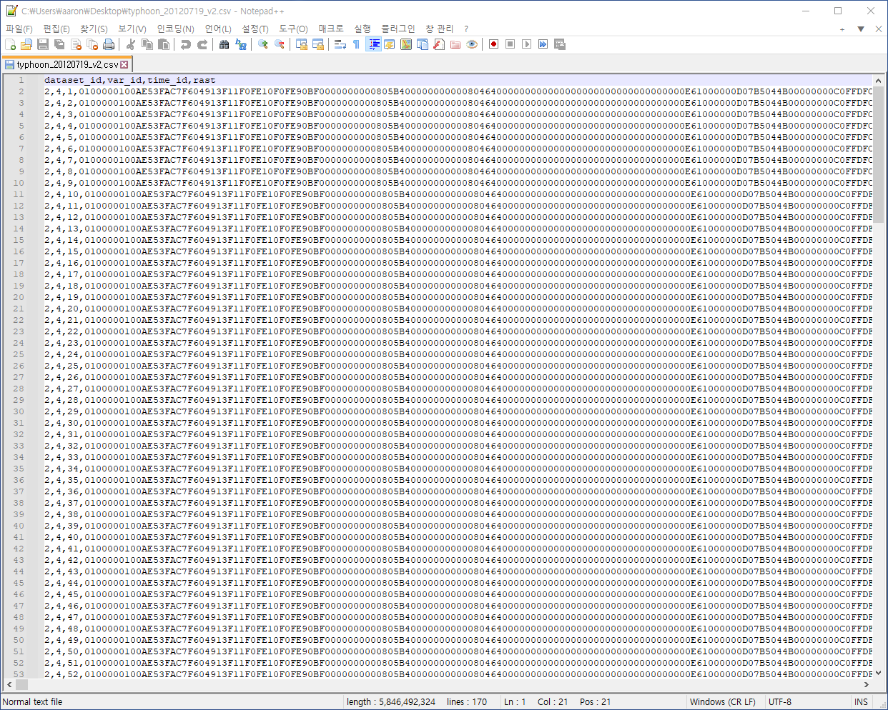

DB 적재 관련 기술공유
Created by 동훈@올포랜드
목차
- 개요
- SCP로 원격 호스트간 파일 이동
- PSQL을 이용한 SQL 쿼리
- 변환 및 적재 프로그램
개요
알아야 할 것들
- SSH - 원격 호스트 접속 프로그램
- SCP - 원격 호스트 간 파일 이동 프로그램
- PSQL - 대화형 PostgreSQL 프로그램(데이터 적재 및 SQL 쿼리 실행)
- 파이썬 가상환경(virtualenv) - netCDF 파일을 변환하고 DB에 적재하는데 필요한 파이썬 라이브러리가 다른 프로젝트랑 꼬이지 않도록 관리 해주는 환경
DB 설계도 - 전체

DB 설계도 - 위험사례 재현정보
테이블 설계 시 고려사항
- 한 netCDF 데이터셋 당 변수 및 시간 별로 격자형 공간 데이터가 있다.
- 위경도 지점 별로 값을 저장하도록 테이블을 설계한다면 더 복잡해지고 쿼리 시간이 길어질 거라 예상했다.
- 그래서 사용자가 변수(variable)와 시간(timestep)을 선택하면 위경도 격자 그리드 데이터를 PostGIS raster 형식으로 통째로 조회할 수 있도록 설계했다.
순서도

- 보시다시피 변환 및 적재 프로그램을 실행하기에 앞서 먼저 원격 호스트 서버 간 netCDF 파일들을 복사 이동해야한다. (all4ocean -> hils) 따라서, 먼저 SCP 프로그램을 이용해 파일을 복사 이동하는 방법에 대해 알아볼 것이다.
- 그 다음, 데이터를 데이터베이스에 적재하기 위해 알아야할 PSQL 프로그램 사용법에 대해서 간단히 알아볼 것이다.
- 최종적으로, 파이썬 기반의 변환 및 적재 프로그램 실행법에 대해서 알아볼 것이다.
SCP로 원격 호스트간 파일 이동
SCP란?
데이터를 DB에 적재하기에 앞서 all4ocean 원격 호스트 서버에 위치한 netCDF 파일들을 DB가 위치한 hils 원격 호스트 서버로 복사해야 한다. 하드 드라이버에 옮겨서 두 번 이동하는거 보다 훨씬 효율적이다.

SCP 문법
scp [SOURCE] [TARGET] [OPTIONS]
- scp는 두 개의 위치 간에 파일 및 디렉터리를 안전하게 copy 하도록 도와주는 커맨드 라인 유틸리티 프로그램이다.
- SOURCE와 TARGET으로 로컬 경로를 지정하거나 [username@]host:[path] 형식으로 원격 호스트의 경로를 지정할 수 있다.
- SOURCE는 우리가 복사해서 가져올 파일 또는 디렉터리 경로
- TARGET은 우리가 복사한 것을 갔다 붙혀넣을 파일 또는 디렉터리 경로
- OPTIONS은 너무 많은데, 우리가 꼭 알아야 할 것은 -P와 -r 옵션이다.
- -P - 원격 호스트에 연결할 포트번호 지정
- -r - 하위 디렉터리를 포함한 모든 디텍토리를 재귀적으로(recursively) 복사
SCP 예시
# ssh [user@]hostname [command]
ssh ppark@211.178.39.246 -p 12522
# scp [SOURCE] [TARGET] [OPTIONS]
scp \
-r -P 7001 \
opr@211.178.39.246:/home/opr/jspark/00_PROJECT/2022y/02_1MW/02_product/01_typhoon/20110626 \
/home/ppark/projects/hilsdb/data/cases_hindcasts/typhoons
- 먼저 ssh로 hils 원격 호스트 서버에 접속한 다음에 scp로 다른 원격 호스트 서버인 all4ocean에 위치한 netCDF 파일을 가져와 보자. 따라서, SOURCE는 [username@]host:[path] 형식가 되는데 TARGET은 이미 hils에 접속한 상태이므로 로컬 경로 형식이 된다.
- 반대로 all4ocean에 접속해서 할 수도 있다. 그러면 SOURCE가 로컬 경로 형식이고 TARGET이 [username@]host:[path] 형식이 된다.
- ssh는 일반적으로 원격 호스트에 로그인하고 명령을 실행하는 데 사용된다.
SCP 예시

PSQL을 이용한 SQL 쿼리
원격 서버 데이터베이스 접근
# ssh [user@]hostname [command]
ssh ppark@211.178.39.246 -p 12522
# psql -h {호스트명} -p {포트번호} -U {사용자명} -d {데이터베이스명}
psql -h localhost -p 5432 -U postgres -d hils
- 보안상 원격 서버의 데이터베이스에 바로 접근하지 않고, 우선 ssh로 원격 서버에 접근한 다음에 데이터베이스에 접근하는 것이 국룰이다.
- ssh는 일반적으로 원격 시스템에 로그인하고 명령을 실행하는 데 사용된다. 터널링 및 포트 포워딩에도 사용된다.
- psql은 PostgreSQL 대화형 터미널 프로그램으로 대화형으로 SQL 명령을 편집/실행 할 수 있다.
유용한 psql 커맨드
-- 모든 데이터베이스 목록보기
\l
-- 모든 스키마 목록보기
\dn
-- 모든 테이블 목록보기
\dt
-- 특정 스키마 내의 모든 테이블 목록보기
\dt {schema_name}.*
-- psql 스크린 클리어하기
\! clear
-- psql 커맨드라인 세션 종료하기
\q
모든 카테고리 조회
SELECT * FROM cases_hindcasts.categories;
모든 카테고리 조회

데이터셋별 모든 변수 조회
-- 데이터셋 식별자가 1에 해당하는 모든 변수 조회
SELECT
variables.var_id,
variables.var_name,
variables.var_long_name,
variables.var_standard_name,
variables.var_units,
variables.dataset_id
FROM cases_hindcasts.variables
INNER JOIN cases_hindcasts.datasets ON
datasets.dataset_id = variables.dataset_id
WHERE
datasets.dataset_id = 1;
데이터셋별 모든 변수 조회

카테고리별 모든 데이터셋 조회
-- 태풍 카테고리에 해당하는 모든 데이터셋 조회
SELECT
datasets.dataset_id,
datasets.dataset_name,
datasets.category_id,
datasets.time_start,
datasets.time_end
FROM cases_hindcasts.datasets
INNER JOIN cases_hindcasts.categories
ON categories.category_id = datasets.category_id
WHERE
category_name=COALESCE(NULL, 'typhoon');
카테고리별 모든 데이터셋 조회

연도별 모든 데이터셋 조회
-- 2021년에 해당하는 모든 데이터셋 조회
SELECT
dataset_id,
dataset_name,
datasets.time_start,
datasets.time_end
FROM cases_hindcasts.datasets
WHERE
EXTRACT(year FROM time_start) = 2012 OR
EXTRACT(year FROM time_end) = 2012;
연도별 모든 데이터셋 조회

변환 및 적재 프로그램
VSCode
다운로드 받으려면 이 링크로 이동해라.
VSCode 장점
엄청나게 많은 확장자들이 있다. 그 중에서 로컬 PC에서 원격 서버 개발을 할 때, 우리가 유용하게 쓸 확장자로는 Remote - SSH가 있다.
VSCode 원격 개발 확장자 설치
왼쪽의 확장자 탭을 클릭해서 Remote - SSH를 검색한다.
VSCode 원격 개발 설정 1
VSCode 편집기 좌하단을 보면 로컬 환경인지 원격 개발 환경인지 알 수 있다.
VSCode 원격 개발 설정 2
우선 SSH 호스트 구성을 선택해서 설정 사항을 저장하자.
VSCode 원격 개발 설정 3
~\.ssh\config 파일을 선택한다.
VSCode 원격 개발 설정 4
Host는 마음대로 정하고, 나머지는 서버 주소, 유저명, 포트번호를 입력한다.
VSCode 원격 개발 설정 5
이제 내가 지정한 이름만 선택해서 연결할 수 있다.
VSCode 원격 개발 설정 6
변환 및 적재 관련 프로젝트는 /home/ppark/projects/hilsdb에 저장되어 있다.
VSCode 원격 개발 설정 7
이제 여기서 코드를 수정하거나 실행할 수 있다.
VSCode 원격 개발 설정 8
터미널 창을 열 수 있다.
VSCode 원격 개발 설정 short cut
code --folder-uri "vscode-remote://ssh-remote+hils/home/ppark/projects/hilsdb"
로컬 PC의 터미널에서 위를 입력해서 한 번에 열 수도 있다.
프로젝트 디렉터리 구조
.
├── database.ini
├── requirements.txt
├── schema_cases_hindcasts.py
├── schema_cases_observations.py
├── data
│ ├── cases_hindcasts
│ └── cases_observations
├── db
│ ├── config.py
│ └── database.py
├── utils
│ └── raster.py
└── venv-hilsdb
- 파이썬 가상환경 관련
- 데이터베이스 관련
- database.ini - DB 연결 문자열이 저장된 파일 (DB 연결 문자열 수정시 이 파일만 수정하면 됨!)
- db/config.py - database.ini 파일을 읽어서 호스트명, 포트번호, 데이터베이스명, 사용자명, 비밀번호 등의 정보를 Dictionary 형태로 출력
- db/database.py - 커스텀 데이터베이스 클래스
- 커스텀 유틸리티 함수. raster.py는 netCDF -> PostGIS WKB(Well-Known Binary) 포맷 변환 시 필요
- 변환할 netCDF 파일들과 DB에 적재할 CSV 파일들이 저장되는 디렉터리
- 위험사례 재현정보 관련 변환 및 적재 실행 파이썬 프로그램
변환 & 적재 프로그램 순서도
코드 설명
if __name__ == "__main__":
""" 데이터베이스 연결 """
params = config()
db = Database(**params)
""" 스키마 제거 (cases_hindcasts) """
# db.execute(query=drop_schema_cases_hindcasts_sql)
""" 스키마 생성 (cases_hindcasts) """
# db.execute(query=create_schema_cases_hindcasts_sql)
""" 테이블 생성 (categories, datasets, variables, datas) """
# db.execute(query=create_table_categories_sql)
# db.execute(query=create_table_datasets_sql)
# db.execute(query=create_table_variables_sql)
# db.execute(query=create_table_datas_sql)
""" 테이블 데이터 모두 삭제 """
# db.execute(query=truncate_table_categories_sql)
""" 다수의 데이터를 categories 테이블에 INSERT """
# db.execute_many(
query=insert_categories_sql,
vars_list=[
["typhoon"], # 태풍
["gale"], # 강풍
["swell"], # 고파
["rain"], # 폭우
["snow"], # 폭설
["fog"], # 해무
],
)
"""
태풍 디렉터리에서 각 netCDF 파일 별로 일괄 적재할 CSV 파일 생성해서 일괄 적재
"""
typhoon_dir = "/home/ppark/projects/hilsdb/data/cases_hindcasts/typhoons"
category_id = 1
# search for nc files in the directory and its subdirectories recursively
flist = glob.glob(f"{typhoon_dir}/**/*.nc", recursive=True)
# write csv file for each netCDF file and import the csv file into database
for ncfile in flist:
# if dataset already exists, continue to next iteration
# TODO: later...
# create csv file
csvfile = os.path.splitext(ncfile)[0] + ".csv"
logger.info("--- CREATING CSV FILE ---")
logger.info(f"\t\t{os.path.basename(ncfile)} -> {os.path.basename(csvfile)} ")
logger.info("--- CREATING CSV FILE ---")
write_datas_into_csv(db=db, ncfile=ncfile, category_id=category_id)
# insert the csv file into database
logger.info("--- INSERTING CSV FILE INTO DB ---")
logger.info(f"\t\t{os.path.basename(csvfile)} 파일 적재 중")
logger.info("--- INSERTING CSV FILE INTO DB ---")
psql_command = f"""
psql \
-h {params['host']} \
-p {params['port']} \
-U {params['user']} \
-d {params['dbname']} \
-c \"\copy cases_hindcasts.datas(dataset_id, var_id, time_id, rast) from {csvfile} with (FORMAT csv, DELIMITER ',', HEADER true, NULL '')\"
"""
result = subprocess.run(
psql_command,
shell=True,
env=dict(os.environ, PGPASSWORD=params["password"]),
)
CSV 파일
실행 방법
# 가상환경 활성화
source venv-hilsdb/bin/activate
# 프로그램 실행
python schema_cases_hindcasts.py
결과 확인
-- 데이터셋 조회
SELECT * FROM cases_hindcasts.datasets;
-- 변수 조회
SELECT * FROM cases_hindcasts.variables;
-- 데이터 갯 수 조회
SELECT count(*) cases_hindcasts.datas;
-- datas 테이블 사이즈 조회
SELECT pg_size_pretty( pg_total_relation_size('cases_hindcasts.datas') );